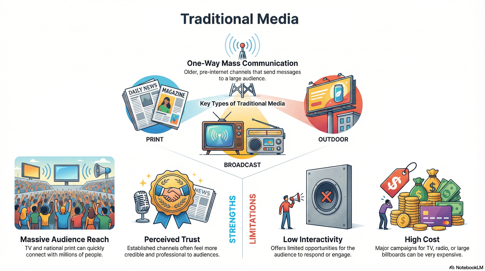

Traditional media includes print, radio and broadcast TV. It still reaches huge audiences
and feels professional and trustworthy, even in a world full of apps and social media.
What is Traditional Media?
Traditional media refers to older, established forms of mass communication such as
newspapers, magazines, radio, posters, billboards and broadcast television. These channels
existed long before the internet and social media.
Messages are usually one-way: the audience receives information but
cannot easily respond or interact. Traditional media is often controlled by large
organisations, which can make it feel more credible and trustworthy.
Key points you must remember
Traditional media includes print, outdoor adverts, radio and broadcast TV.
It is usually one-way communication with limited interactivity.
It can reach very large audiences but is often expensive.
It is often combined with new media in modern campaigns.
What the Specification Says
Traditional media sectors
The specification lists four traditional media sectors. For each one you should be able to say what it produces and how it is changing.
Know the traditional media sectors: film, television, radio and print publishing
Know the types of products each sector produces and uses
Know how each sector is evolving – especially because of the internet and new media
Know that the same product can be used by different sectors
R093 · 1.1 Media industry sectors and products
The Four Traditional Sectors
Traditional media sectors grew up before the internet. They usually reach large audiences through one-way communication – but every one of them is changing fast.
Film: a crew shooting on location · Photo: Lê Minh on Pexels
Film
The film sector makes feature films, documentaries and short films, plus the products that promote them: trailers, posters and press kits.
Evolving: streaming premieres, digital cameras and projection, more VFX and CGI
Same product, many sectors: a film trailer plays in cinemas, on TV and on YouTube
Print publishing produces newspapers, magazines, books, comics and graphic novels, plus printed posters and leaflets.
Evolving: falling print sales, digital editions, eBooks, apps and paywalled websites
Many titles are now 'digital first' with a smaller print run
How Traditional Media Is Changing
The specification asks how sectors are evolving. The big idea is convergence – traditional and new media are merging.
Distribution
From scheduled to on-demand
Audiences watch and listen when they want
Streaming, catch-up and podcasts replace fixed schedules
Audience
From one-way to two-way
Audiences comment, share and vote on social media
Producers get instant feedback and data
Products
Print to digital
Newspapers and magazines publish online and in apps
Books become eBooks and audiobooks
Business
New competition
Competing with YouTube, streaming and social media for attention
Advertising money has moved online
Example: one product, many sectors
A new film's trailer is made by the film sector, but it is shown as a TV advert, played before other films in the cinema, featured in a magazine review and shared on YouTube and social media.
This is why exam answers should name the productand the sector it is being used in.
Key Terms
Media sector
A part of the media industry that makes a particular kind of product, e.g. film or radio.
Traditional media
Older media sectors that existed before the internet: film, TV, radio and print publishing.
Mass media
Media that reaches very large audiences at the same time.
One-way communication
The audience receives the message but cannot easily respond.
Broadcast
Sending content to a large audience at the same time, e.g. TV and radio.
Convergence
When different media and technologies merge, e.g. a newspaper publishing video on its app.
Exam Tips & Common Mistakes
✔ Exam tips
Name the sector and give a specific product example
Explain how a sector is evolving, with a real example (e.g. radio → podcasts)
Show that the same product can be used by more than one sector
✘ Common mistakes
Don't say traditional media is 'dead' – it still reaches millions and is evolving
Don't confuse sectors (e.g. television) with products (e.g. a TV advert)
Don't give vague answers like 'it's old' – explain the impact on the audience or producer

Traditional Media at a Glance
Use this infographic to remember the main types of traditional media and how they are used
in campaigns today.
Types of Traditional Media
Channels that existed before the internet and social media.
Use these games to test your knowledge of traditional vs new media, platforms and
how products are delivered to audiences.
All topics
iMedia Genius
Mixed questions on the whole R093 spec, including traditional and new media,
job roles, planning and legal issues.
Exam-styleWhole spec
Media industry
Sector Sorter
Sort products into traditional vs new media sectors and link them to examples
like TV, radio, magazines and websites.
MCQsSectors
Distribution
Distribution Dash
Match campaigns to the best mix of traditional and digital platforms to reach
specific audiences.
MCQsPlatforms
Exam Practice – Traditional Media (AI Marker)
Write your answers in the boxes below, then click Build & Copy AI Marking Prompt.
Choose an AI tool and paste the prompt to get examiner-style marking and feedback.
Q1. Define "traditional media". (1 mark)
Technique: One clear sentence.
Q2. State one traditional media format that could be used to promote a new theatre show. (1 mark)
Technique: Just name one valid format.
Q3. Explain one advantage of using a TV advert instead of a social media advert to promote a charity appeal. (2 marks)
Technique: Make one point and develop it with "because / so".
Q4. Describe two limitations of using posters instead of online adverts to target teenagers. (4 marks)
Technique: Two separate limitations. For each: problem + impact.
Q5. A company is launching a new sports drink. Discuss the advantages and disadvantages of using both traditional media and new media to promote the product. (9 marks)